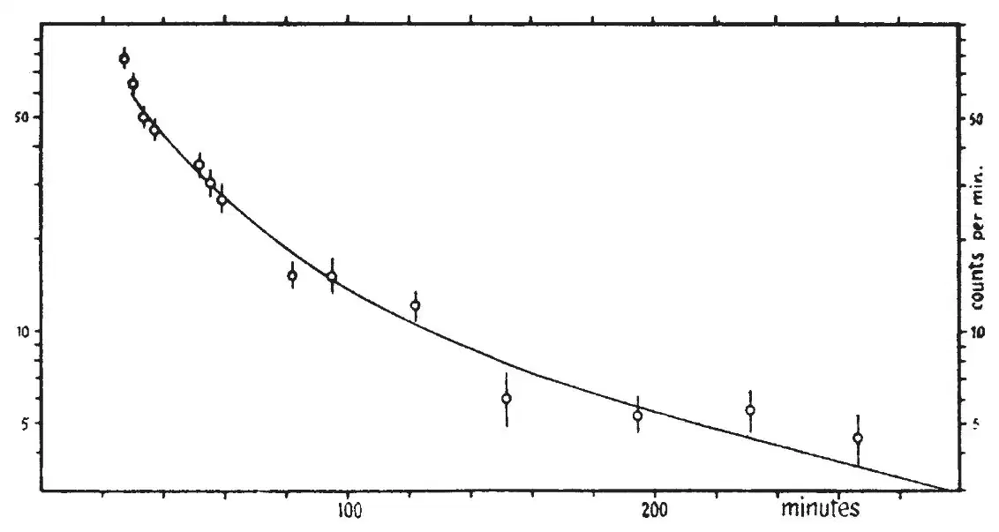

中文
中文L. Meitner and O. R. Frisch
Editor’s Note
Lise Meitner and Otto Frisch here report new experiments probing the products of uranium fission experiments. Earlier work suggested that fission fragments should emerge with energies of several hundred million electron volts. Here the researchers sent neutrons into a sample of uranium hydroxide and attempted to collect the fission fragments 1 mm away, either in a paper surface or in water. They found evidence for a range of different fission fragments. It seemed most unlikely that the mere absorption of a neutron could give a uranium nucleus enough kinetic energy to reach their collecting surfaces. This new technique offered a route to the more detailed examination of the nuclear fragments created in fission processes. 中文
OHahn and F. Strassmann1 have discovered a new type of nuclear reaction, the splitting into two smaller nuclei of the nuclei of uranium and thorium under neutron bombardment. Thus they demonstrated the production of nuclei of barium, lanthanum, strontium, yttrium, and, more recently, of xenon and caesium. 中文
It can be shown by simple considerations that this type of nuclear reaction may be described in an essentially classical way like the fission of a liquid drop, and that the fission products must fly apart with kinetic energies of the order of hundred million electron-volts each2. Evidence for these high energies was first given by O. R. Frisch3 and almost simultaneously by a number of other investigators4. 中文
The possibility of making use of these high energies in order to collect the fission products in the same way as one collects the active deposit from alpha-recoil has been pointed out by L. Meitner (see ref. 3). In the meantime, F. Joliot has independently made experiments of this type5. We have now carried out some experiments, using the recently completed high-tension equipment of the Institute of Theoretical Physics, Copenhagen. 中文
A thin layer of uranium hydroxide, placed at a distance of 1 mm. from a collecting surface, was exposed to neutron bombardment. The neutrons were produced by bombarding lithium or beryllium targets with deuterons of energies up to 800 kilovolts. In the first experiments, a piece of paper was used as a collecting surface (after making sure that the paper did not get active by itself under neutron bombardment). About two minutes after interrupting the irradiation, the paper was placed near a Geiger-Müller counter with aluminium walls of 0.1 mm. thickness. We found a well-measurable activity which decayed first quickly (about two minutes half-value period) and then more slowly. No attempt was made to analyse the slow decay in view of the large number of periods to be expected. 中文
The considerable intensity, however, of the collected activity encouraged us to try to get further information by chemical separations. The simplest experiment was to apply the chemical methods which have been developed in order to separate the “transuranium” elements from uranium and elements immediately below it6. The methods had to be slightly modified on account of the absence of uranium in our samples and in view of the light element activities discovered by Hahn and Strassmann1. 中文
In these experiments, the collecting surface was water, contained in a shallow trough of paraffin wax. After irradiation (of about one hour) a small sample of the water was evaporated on a piece of aluminium foil; its activity was found to decay to zero. It was checked in other ways, too, that the water was not contaminated by uranium. To the rest of the water we added 150 mgm. barium chloride, 15 mgm. lanthanum nitrate, 15 mgm. platinum chloride and enough hydrochloric acid to get an acid concentration of 7 percent. Then the platinum was precipitated with hydrogen sulphide, in the usual way; the precipitate was carefully rinsed and dried and then placed near our counter. 中文
The results of three such experiments were found to be in mutual agreement. The decay of the activity was in one case followed for 28 hours. For comparison, a sample of uranium irradiated for one hour was treated chemically in the same way. The two decay curves were in perfect agreement with one another and with an old curve obtained by Hahn, Meitner and Strassmann under the same conditions. In the accompanying diagram the circles represent our recoil experiment while the full line represents the uranium precipitate. A comparison of the activity (within the first hour after irradiation) of the precipitate and of the evaporated sample showed that the precipitate contained about two thirds of the total activity collected in the water. After about two hours, however, the evaporated sample was found to decay considerably more slowly than the precipitate, presumably on account of the more long-lived fission products found by Hahn and Strassmann1. 中文

From these results, it can be concluded that the “transuranium” nuclei originate by fission of the uranium nucleus. Mere capture of a neutron would give so little kinetic energy to the nucleus that only a vanishing fraction of these nuclei could reach the water surface. So it appears that the “transuranium” periods, too, will have to be ascribed to elements considerably lighter than uranium. 中文
In conclusion, we wish to thank Dr. T. Bjerge, Dr. J. Koch and K. J. Brostrøm for putting the high-tension plant at our disposal and for kind help with the irradiations. We are also grateful to Prof. N. Bohr for the hospitality extended to us at the Institute of Theoretical Physics, Copenhagen. 中文
(143, 471-472; 1939)
Lise Meitner: Physical Institute, Academy of Sciences, Stockholm.
Otto Robert Frisch: Institute of Theoretical Physics, University, Copenhagen, March 6.
References:
1. Hahn, O., and Strassmann, F., Naturwiss., 27, 11, 89, and 163 (1939).
2. Meitner, L., and Frisch, O. R., Nature, 143, 239 (1939). Bohr, N., Nature, 143, 330 (1939).
3. Frisch, O. R., Nature, 143, 276 (1939).
4. Fowler, R. D., and Dodson, R. W., Nature, 143, 233 (1939). Jentschke, W., and Prankl, F., Naturwiss., 27, 134 (1939).
5. Joliot, F., C. R., 208, 341 (1939).
6. Hahn, O., Meitner, L., and Strassmann, F., Chem. Ber., 69, 905 (1936); and 70, 1374 (1937).